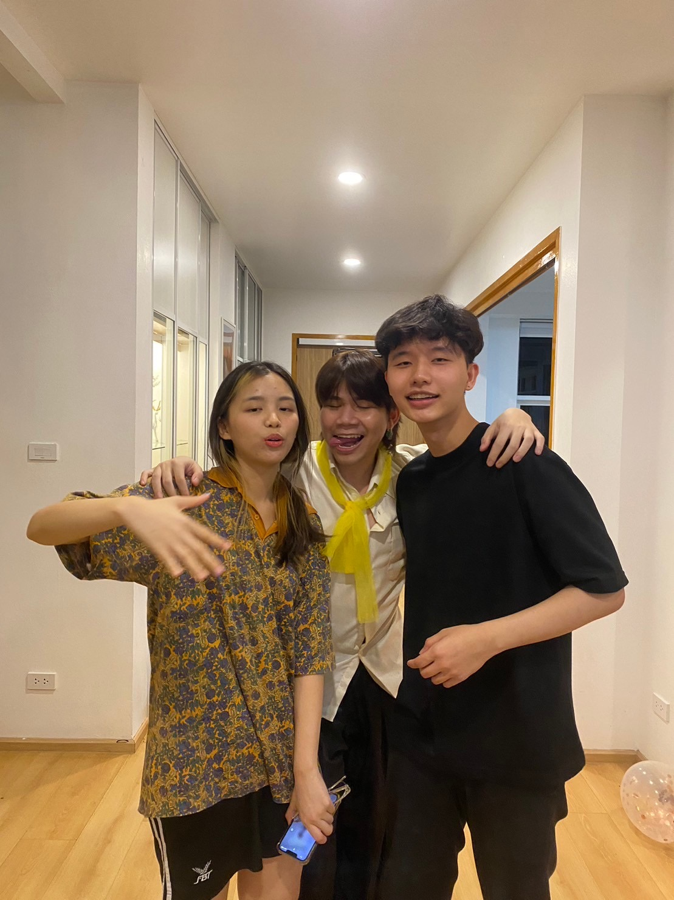

ttb ถือเป็นที่แรกที่ได้เข้าไปฝึกงาน เป็นที่ที่ทำให้ได้รู้จักกับคำว่าทำงานจริง ๆ ได้เจอเพื่อนใหม่ผู้คนใหม่ ได้เจ็บจริงและโดนด่าจริง เคย burnout ถึงขั้นที่อยากออกแต่สุดท้ายก็อดทนสู้ฟันฝ่ามาจนจบ พอมองคิดย้อนกลับไปก็อยากขอบคุณตัวเองที่พยายาม ขอบคุณตัวเองที่กล้าที่จะเผชิญกับอุปสรรคและทำให้ได้รู้จักเพื่อน ๆ มากมาย